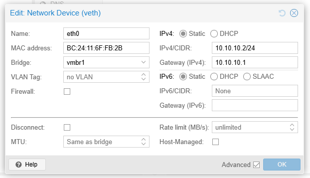
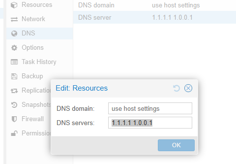

Proxmox Network Isolation - Isolate LXC Container from Local Network
When you run a service like WordPress in your homelab and expose it to the internet (via Cloudflare Tunnel, reverse proxy, etc.), you’re creating an entry point that the outside world can reach. By default, this container sits on your home network alongside other devices, and if it’s compromised, an attacker could pivot to attack your NAS, Proxmox host, or other devices on the LAN.
The practical question is: does your WordPress container actually need access to your internal network? The answer is almost always no. WordPress needs internet access to fetch updates, plugins, and reach Cloudflare. But it has no legitimate reason to reach other devices on your LAN.
Network isolation enforces this principle: the container gets full internet access via NAT, but is explicitly denied access to your local network. If WordPress is compromised by a vulnerability or malicious plugin, an attacker cannot pivot internally to attack your infrastructure. 🛡️
Why Network Isolation?
- Security by default — limit the blast radius if a container is compromised
- Network segmentation — different containers have different trust levels and access requirements
- Compliance-like boundaries — enforce what each service should reach
- Simplified troubleshooting — catch unintended network access patterns
What You’ll Achieve
- ✅ Container gets internet access via NAT
- ✅ Container cannot reach your local LAN
- ✅ DNS works via public resolvers or Tailscale
- ✅ WordPress hosted on the container is accessible through Cloudflare Tunnel
Step-by-Step Setup
Step 1: Create an Isolated Bridge on Proxmox
SSH into your Proxmox host and edit the network config:
nano /etc/network/interfaces
Add a new bridge with no physical uplink (this is the isolation magic):
auto vmbr1
iface vmbr1 inet static
address 10.10.10.1/24
bridge-ports none
bridge-stp off
bridge-fd 0
post-up iptables -t nat -A POSTROUTING -s '10.10.10.0/24' -o vmbr0 -j MASQUERADE
post-up iptables -I FORWARD 1 -i vmbr1 -d 192.168.1.0/24 -j REJECT
post-down iptables -t nat -D POSTROUTING -s '10.10.10.0/24' -o vmbr0 -j MASQUERADE
post-down iptables -D FORWARD -i vmbr1 -d 192.168.1.0/24 -j REJECT
What each line does:
| Line | Purpose |
|---|---|
address 10.10.10.1/24 |
Gateway IP for the isolated subnet |
bridge-ports none |
No physical NIC attached — this prevents LAN traffic |
post-up iptables -t nat...MASQUERADE |
Enable NAT so container traffic leaves the Proxmox host |
post-up iptables -I FORWARD...-d 192.168.1.0/24 |
Block forwarding to your LAN |
post-down iptables -t nat...-D |
Clean up the NAT rule when bridge stops |
post-down iptables -D FORWARD |
Clean up the block rule |
Enable IPv4 forwarding (required for NAT):
echo "net.ipv4.ip_forward=1" >> /etc/sysctl.conf
sysctl -p # Apply immediately
Step 2: Restart Networking
Bring up the new bridge:
ifdown vmbr1 && ifup vmbr1
Verify it exists:
ip addr show vmbr1
brctl show vmbr1
Verify the NAT and FORWARD rules were added:
iptables -t nat -L POSTROUTING -n -v
iptables -L FORWARD -n -v
Step 3: Attach Container to the Isolated Bridge
In the Proxmox web UI:
- Open your container
- Go to Network
- Open the Network Device
- Change Bridge from
vmbr0tovmbr1 - Set the IP Configuration to Static and use an IP in the subnet
- Go to DNS
- Set the DNS Servers to
1.1.1.1 1.0.0.1(Cloudflare DNS) or your preferred public DNS - Reboot the container to apply all changes


Verification
Inside the container, run these tests:
# Test 1: Can reach the gateway (required for any external traffic)
ping -c 3 10.10.10.1
# Test 2: Can reach the internet (NAT working)
ping -c 3 1.1.1.1
# Test 3: Cannot reach local network (isolation working)
# Use an actual IP from your LAN, e.g., your NAS or router
ping -c 3 192.168.1.15
# Test 4: DNS works
nslookup vg.no
Expected results:
✅ ping 10.10.10.1 — success (2 packets → 2 received)
✅ ping 1.1.1.1 — success (3 packets → 3 received)
❌ ping 192.168.1.15 — fails (Destination Host Unreachable or Port Unreachable)
✅ nslookup vg.no — resolves and returns an IP
Debugging Network Issues
If internet fails, verify on the Proxmox host:
# Check IP forwarding is enabled
sysctl net.ipv4.ip_forward
# Check NAT rule exists
iptables -t nat -L POSTROUTING -n -v
# Check bridge membership
brctl show vmbr1
# Test connectivity from host
ping -c 1 10.10.10.2
Ending
This setup gives you a practical security boundary for internet-facing homelab services: keep outbound internet access for updates and integrations, while blocking lateral movement into your LAN.
For me, this is now a baseline pattern in Proxmox: if a service is exposed publicly, it should live on an isolated bridge with explicit egress rules instead of full LAN trust.